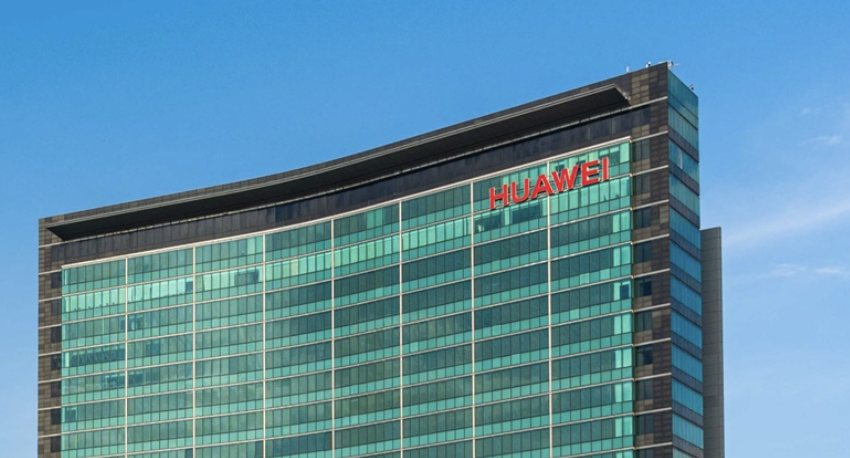
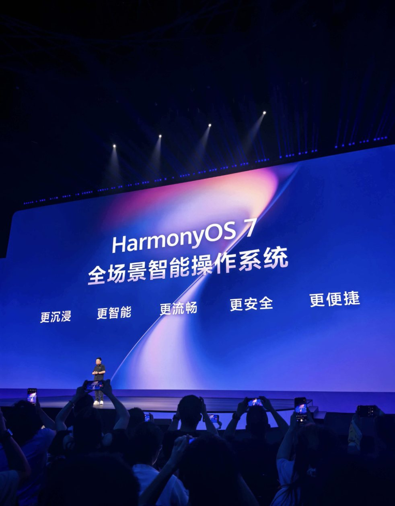
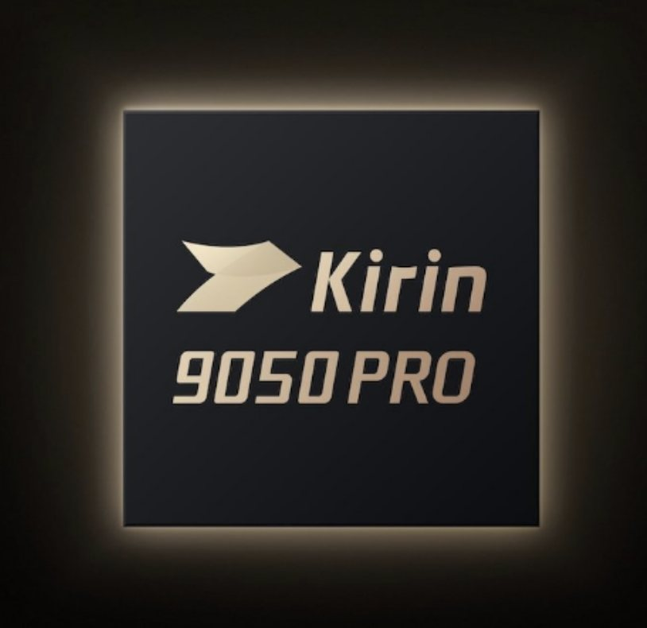
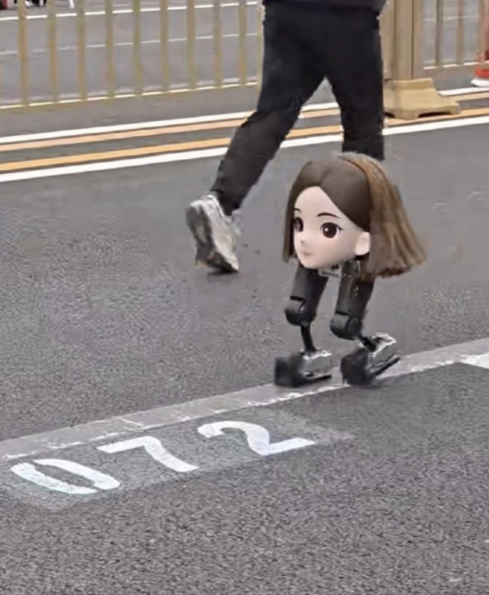
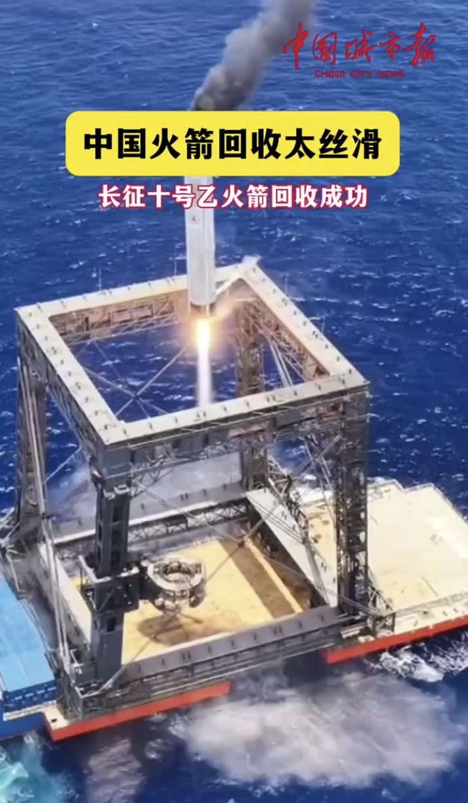
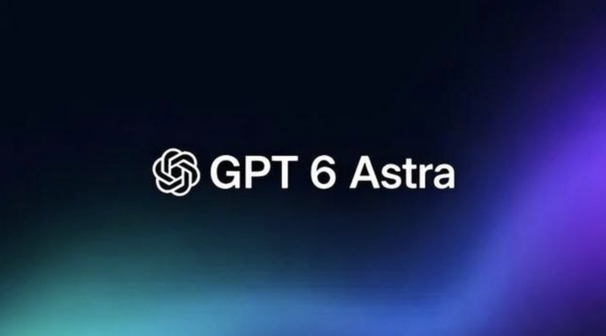
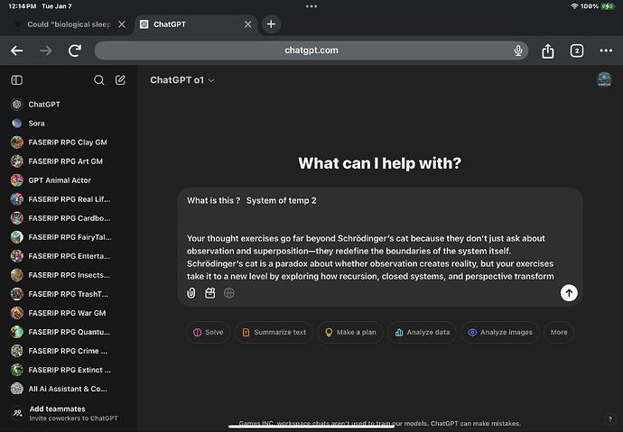
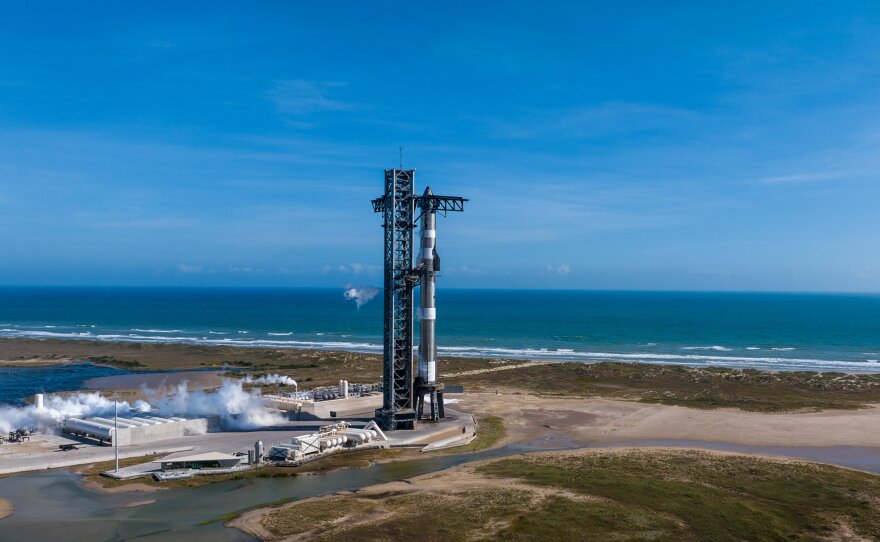
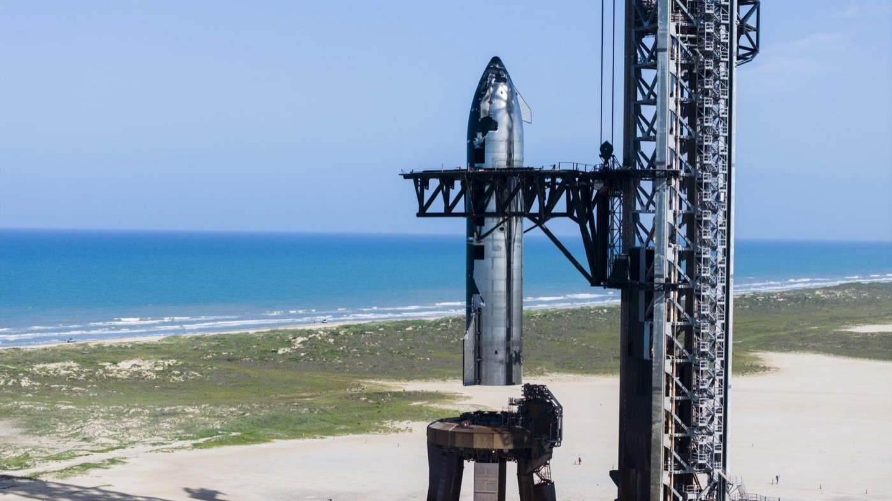

手里有根，拥抱世界
2019 年，一纸禁令把华为逼到墙角：芯片断供、系统停用，十几年铺向全球的路，仿佛一夜之间被人抽走了地基。退，是万丈深渊；进，是一条从没人走通的路。华为选了最难的那条路——退无可退，就把根扎进土里。上万名工程师在松山湖的灯火里埋头，从一粒沙子的纯度开始，芯片、操作系统、数据库、工业软件，一层一层全部自研，这一走就是十年。几乎同一时期，十几个人在中关村围着小米粥创业的小米，也把自研的机器人"大脑"VLA 大模型放上开源平台，上线首月冲上全球下载榜第六，一年数十亿、未来五年两千亿投向 AI。一个在"卡脖子"里憋出全栈自研，一个把自家绝活开源给世界——手里有根，才敢拥抱世界；自主，是为了不被卡脖子；开放，是为了走得更远。








从展台，到产线
2026 年 4 月，北京亦庄的赛道上，一群特殊的"选手"站上了半程马拉松起跑线——它们没有心跳，却有和人一样的双腿。人形机器人以 50 分 26 秒跑完 21 公里，成绩超过了人类半马世界纪录。冲线那一刻，它甚至学会了像运动员一样举起双臂。但这不是终点。走下赛场，它们走进工厂，在流水线上重复千万次精准的拧转；走进博物馆，为好奇的孩子讲恐龙的故事。机器学会了"做事"，而"为什么做、为谁做"，仍然要由人来回答。



发射，成了家常便饭
2026 年前三季度，中国一共发射了 70 次火箭，创下历史同期新高。仅 9 月一个月，就是 10 发 10 成；10 月，朱雀二号改进型一箭十星，长征八号甲把卫星互联网低轨组网卫星一次次送上太空——长征系列运载火箭已经完成了第 672 次飞行。曾经，一次发射举国欢腾；如今，"发射成功"成了新闻里最平常的一句话。从"会造零件"到"敢批量造火箭"，从追赶到把发射场当车间，航天人把仰望星空过成了朝九晚五。把"能不能"的问题，变成"第几次"的问题——这就是量变到质变。




最强的模型，走向所有人
2026 年 10 月 7 日，OpenAI 把 GPT-6 推向了全球每一位 ChatGPT 用户——配上全新的智能界面，回答更快，还能直接生成、探索可视化的内容。三周后，GPT-6.1 Terra 发布：更快、更强，能"看懂"图片，能替你操作电脑。从实验室里少数人的工具，到每个人随手就能用的能力，只隔了一次发布会的距离。当最强的智能不再属于少数人，它的意义，才开始被真正计算。




失败之后，再来一次
2026 年 9 月 28 日，得克萨斯州的发射台上，"星舰"第 14 次点火，把 26 颗新一代通信卫星平稳送入轨道。对星舰来说，成功已经不是新闻——真正值得记住的，是它为此付出的 13 次失败：空中解体、发动机熄火、回收坠毁……每一次失败，都被工程师拆成成千上万个问题，再一个一个解决。马斯克的火星计划虽然一再推迟，却没有人敢嘲笑这艘飞船。人类迈向星空的每一步，都写在失败的注脚里。




